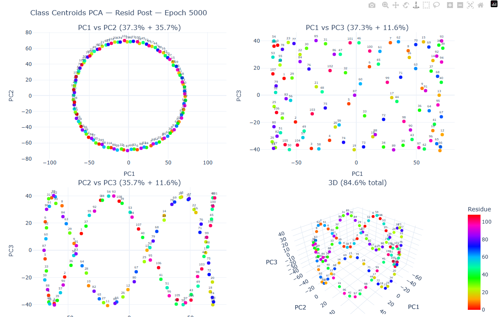

A quiet system for showing how learning moves.
This page is the foundation I'd build Kinomorphic.com on — type, color, the signature mark, and the figure frame. It's the place to agree on the parts before we assemble the pages. Everything here is live: change the type pairing, color temperature, and light/dark from the controls top-right and the whole system updates.
The work is the brand.
The strongest visual idea isn't something to invent — it's already in your figures. Checkpoints trace a path through training and resolve into structure: residue classes settling onto a ring, parameters sweeping from blue to red, eigenvalues migrating toward one. That motion-into-form is "kinomorphic." So the identity borrows the research's own grammar rather than decorating around it.
Everything else follows from three feelings you named: trust (so: no overclaim, no hype, figures shown plainly), inspiration (so: generous room to read, the work leading), and appreciation for the care (so: precise type, restrained motion, nothing performative).
The work leads, the frame recedes.
Calm neutrals and quiet chrome so saturated figures are the loudest thing on any page.
Read like a paper, not a feed.
A 68-character measure, serif titles at modest scale, mono for the technical register.
Motion is meaning, used sparingly.
Only the mark moves on its own. Everywhere else, movement belongs to the figures.
Honest about scale.
Three posts read as a confident beginning — never a sparse page asking to be filled.
Shape emerging from movement.
Four directions, all built from pure geometry (circles, arcs, paths) so they read at favicon size and animate cleanly. My recommendation is Settling Ring: discrete checkpoints arrive along a path and resolve into a circle — literally the residue-class plot, and literally the name.
Settling Ring
Checkpoints spiral in and settle onto a ring; one live marker keeps orbiting. Motion → form, in one glyph.
Trajectory
A learning path with checkpoint dots and a leading marker — the parameter sweep, abstracted.
Aperture
Concentric arc segments — a phase transition opening. Quietest at tiny sizes.
Lissajous
A single parametric curve — a form drawn entirely by motion. The most literal "kinomorph."
Serif titles that don't shout, geometric sans for clarity, mono for the register.
Three self-hostable pairings (all open / Google Fonts). Each shows all three roles at once. Apply one site-wide from the controls — the page you're reading uses whichever is active.
Neutrals that recede; two accents drawn from the research.
The palette's job is to disappear behind your figures' locked frequency / residue colorwheels. So: low-chroma neutrals, and only two accents — both lifted from your own plots.
Neutral temperature — pick one
Warm paper
Closest to a printed page. Reads as care.
Cool slate
Ties to the dashboard chrome & figures.
Near-mono
Most neutral. Lets one accent do all the work.
Two grounded accents
Links, active states, the mark's quiet body. Echoes Plotly's slate title color, so embeds feel native.
Used rarely: phase-transition markers, the live orbiting checkpoint. It's the red epoch line from your figures, promoted to a signal.
One wrapper to make every Plotly embed feel like it belongs.
The figures don't share a visual language yet — but they don't have to be re-rendered to feel cohesive. A consistent frame (numbered label, sans title, mono metadata, captions in our type) does most of the work. The plot inside is untouched.

What the frame standardizes
Numbered FIG n label · sans title · mono run metadata (prime, seed, epoch) · caption measure & color · 8px inset on a true-white bed so dark mode never muddies a plot.
A modular scale; a paper measure.
Body sits at a 68-character measure for paper-like reading. Spacing follows a simple 4-based step so layout rhythm stays predictable.
Restraint is the point.
The mark animates once on arrival and keeps one slow orbit. Content reveals gently on scroll. Inside posts, the only thing that plays is the figure itself — via the checkpoint scrubber. Nothing autoplays, loops aggressively, or pulses for attention. Everything respects prefers-reduced-motion.
See it assembled.
The same system, built into the three surfaces from the brief.